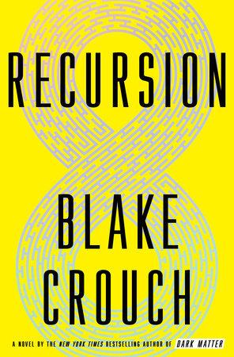

Goodreads helps you keep track of books you want to read.
Start by marking “Recursion” as Want to Read:

Recursion
by Blake Crouch
Thats what New York City cop Barry Sutton is learning as he investigates the devastating phenomenon the media has dubbed False Memory Syndrome-a mysterious affliction that drives its victims mad with memories of a life they never lived. That's what neuroscientist Helena Smith believes. Its why shes dedicated her life to creating a technology that will
GET A COPY
Readers also enjoyed: